tuesdata <- tidytuesdayR::tt_load("2023-01-31")
cats <- tuesdata$cats_uk
cats_reference <- tuesdata$cats_uk_reference7 Cats: data-driven annotations with {ggtext}
In this chapter, we’ll learn how to create custom captions with social media icons, and add data-driven annotations to our plots.
7.1 Data
Between 2013 and 2017, Kays et al. (2020) recruited volunteers in the United States of America, the United Kingdom, Australia, and New Zealand who volunteered to attach GPS sensors to their pet cats. The data (McDonald and Cole 2020) was collected because pet cats kill native species, such as birds, and this creates conservation issues. Studying how different cats move around when they’re not at home, can help us to understand the impact of pet cats on our environment. In this chapter, we’ll focus on the data from cats (and their owners!) based in the United Kingdom.
The data was used as a TidyTuesday dataset in January 2023 (after being suggested by Tom Mock), and so can be loaded with the tt_load() function from {tidytuesdayR} (Hughes 2022b). There are two datasets included, which we’ll read in as cats and cats_reference.
The cats data contains information from the sensors including the latitudes and longitudes recorded at different time stamps. There are multiple (many) observations for each cat, resulting in a total of 18215 rows across 11 columns. Some of the observations have been marked as outliers, either by an automatic algorithm, manually, or both. The cats_reference data contains information provided by the cat owners on each individual cat such as their name, age, sex, how long they spend indoors, and what type of food they eat. The two datasets can be joined by the tag_id column that exists in both cats and cats_reference.
7.2 Exploratory work
With the cats data, we could focus the spatial patterns and look at the range of where cats travel. For example, how far does the average cat travel in a day? Alternatively, we could focus on the cats_reference data and look at relationships between different behaviors and characteristics of cats. For example, do older cats spend more time indoors? Or do cats who live with other cats bring home more prey?
The third option, and perhaps the most useful, is to join the two datasets together. Joining the data on the individuals to their geographic data might allow us to answer questions such as: do male cats travel further per day? Do older cats stay closer to home? What are the strategies of a cat that brings home lots of gifts?
7.2.1 Data exploration
Let’s start by digging into the geographic cats data. We can make a very quick plot of the co-ordinate data using plot().
plot(
cats$location_long, cats$location_lat,
xlab = "Longitude", ylab = "Latitude"
)
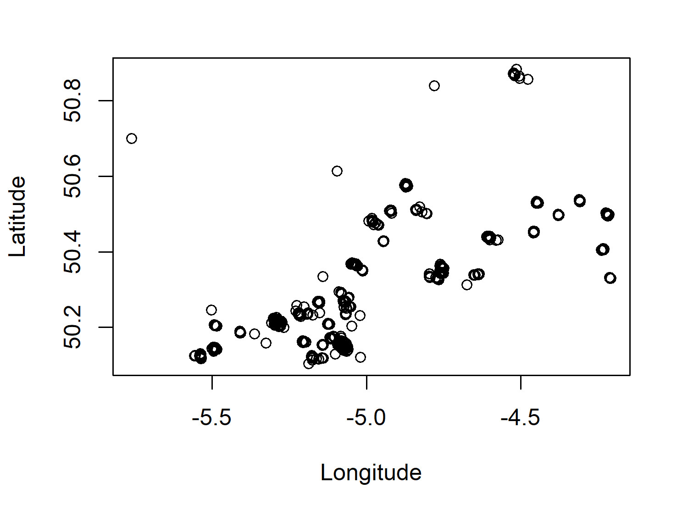
Given that the data in Figure 7.1 is geographic coordinate data, we would be able to understand it a bit better with a background map to give more context to location and distance. However, even with this very minimal map, it’s clear that there are lots of small clusters of points - perhaps each cluster is a specific cat?
Tip 7.1: Remembering latitude and longitude
No matter how many times you plot them on a map, remembering which way round latitude and longitude go on the x- and y-axes might not seem to get any easier! One way to help you remember:
- Picture a world map. It’s probably rectangular with the long edge going along the bottom.
- The longitude goes along the bottom i.e. the x-axis.
The GPS sensors also report data on the ground speed of the cats, potentially allowing us to see patterns in their activity level throughout the day. Let’s have a look at the ground_speed column by plotting an exploratory histogram with hist():
hist(cats$ground_speed,
xlab = "Ground speed (m/s)",
main = "Histogram of ground speed"
)
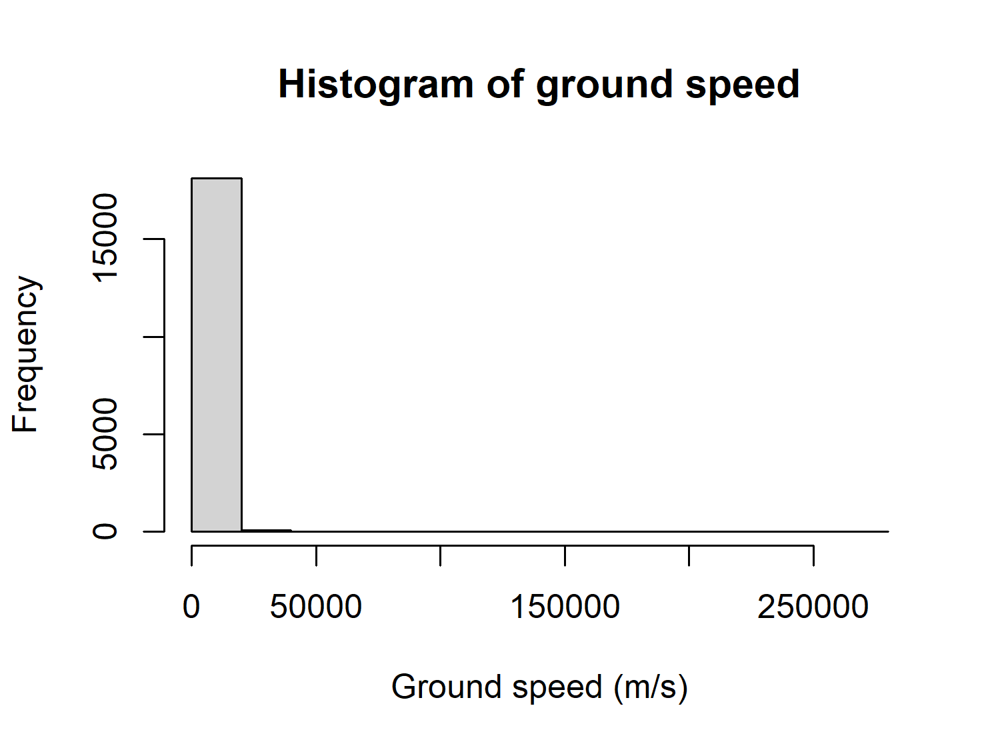
At first glance you might not see anything of particular note about Figure 7.2. However, the data description reports that the ground speed is measured in meters per second (m/s), but the histogram goes up to 250,000. For those of you who don’t often work in m/s, that’s about 560,000 miles per hour, or 900,000 kilometers per hour! Either these are exceptionally fast cats or there’s an issue with the ground speed data. Perhaps the units were incorrectly recorded, or the sensors did not perform correctly. We don’t know what the issue is, but this is certainly a column in the data that we shouldn’t trust too much.
Let’s focus on the cats_reference data instead, and look at how characteristics of the study cats varied. For example, we might look at how long the cats spend indoors, which is recorded as a categorical variable, hrs_indoors. We can calculate how many cats fall into each time indoors category using table() and then use barplot() to visualize it:
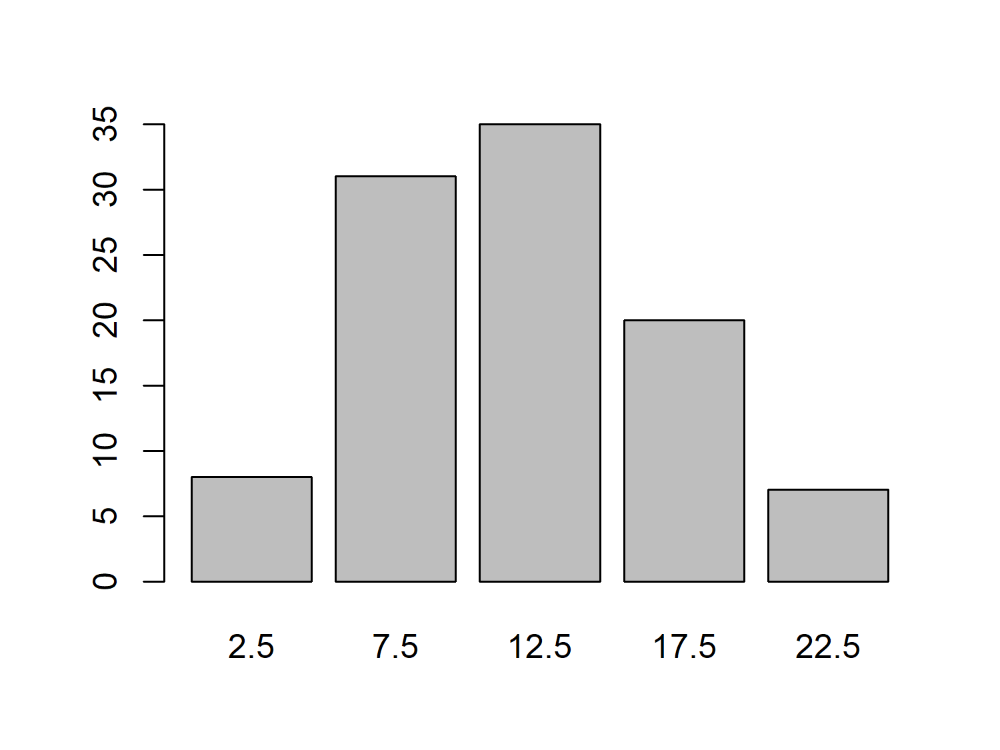
We might expect that the number of hours a cat spends indoors varies with age, with older cats spending more time indoors due to health problems or energy levels. Let’s use plot() to create a quick scatter plot of age_years against hrs_indoors to investigate:
plot(
cats_reference$age_years, cats_reference$hrs_indoors,
xlab = "Age", ylab = "Hours indoors"
)
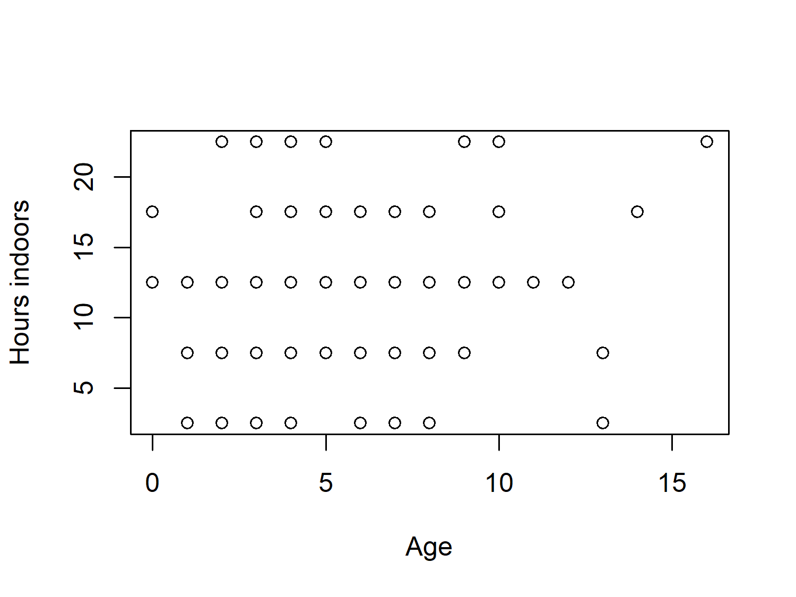
There’s a little bit of a pattern in Figure 7.4, but not a particularly strong one. This is perhaps partly due to the categorical nature of the hrs_indoors column, since we lose information when we group data that is naturally continuous.
This categorization of data also results in many of the points being stacked on top of each other. There are 101 cats in the data, but there doesn’t appear to be 101 points in Figure 7.4. If we were to take the visualization further, we might consider changing it from a scatter plot to a bubble plot. With bubble plots, the size of the points relates to some other variable e.g. the number of cats in each age_years-hrs_indoor category combination.
7.2.2 Exploratory sketches
Let’s take the idea from Figure 7.4 but develop into a much more effective visualization, making particular use of text and annotations. We’ll update the chart to make a bubble plot. But we’ll also add annotations to highlight interesting aspects of the data e.g. the oldest cat, or the average amount of time spent indoors. Figure 7.5 gives a basic illustration of how we might develop it:
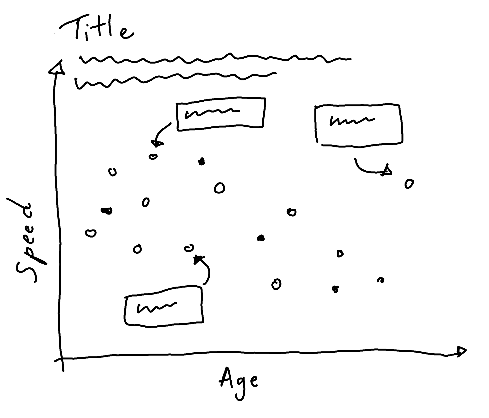
7.3 Preparing a plot
In order to create Figure 7.5 in {ggplot2}, we only need to work with two columns in the cats_reference data: the cat age, age_years, and the average number of hours per day spent indoors, hrs_indoors.
7.3.1 Data wrangling
The hrs_indoors column contains five categories for time spend indoors: 2.5, 7.5, 12.5, 17.5, and 22.5. Since these category names are numbers, they are encoded in R as numeric columns instead of categories, so we start by convert the hrs_indoors column to a factor(). To know how big the bubbles of our plot will be, we need to know how many cats there are for each combination of age and indoor time. We group_by() the two relevant columns and then use count() from {dplyr} to count the number of each category combination, before un-grouping with ungroup().
There’s one cat (Johnny) whose age is unknown, so we use drop_na() from {tidyr} to remove this value. See Chapter 4 and Chapter 10 for some other discussions on visualizing and dealing with missing values in your data.
7.3.2 The first plot
We pass our data into the ggplot() function as always, and then set up the aesthetic mapping with aes(). As we did in Figure 7.4, we put age on the x-axis and hours indoors on the y-axis. Here, we also map the number of cats in each category combination, n, to the size aesthetic to make the bubbles. Although we are making a bubble plot rather than a scatter plot, we still use geom_point() since both types of plots are made from points. Scatter plots are essentially a special case of bubble plots where all of the points represent one observation and so are all the same size.
library(ggplot2)
base_plot <- ggplot(
data = plot_data,
mapping = aes(
x = age_years,
y = hrs_indoors,
size = n
)
) +
geom_point()
base_plot
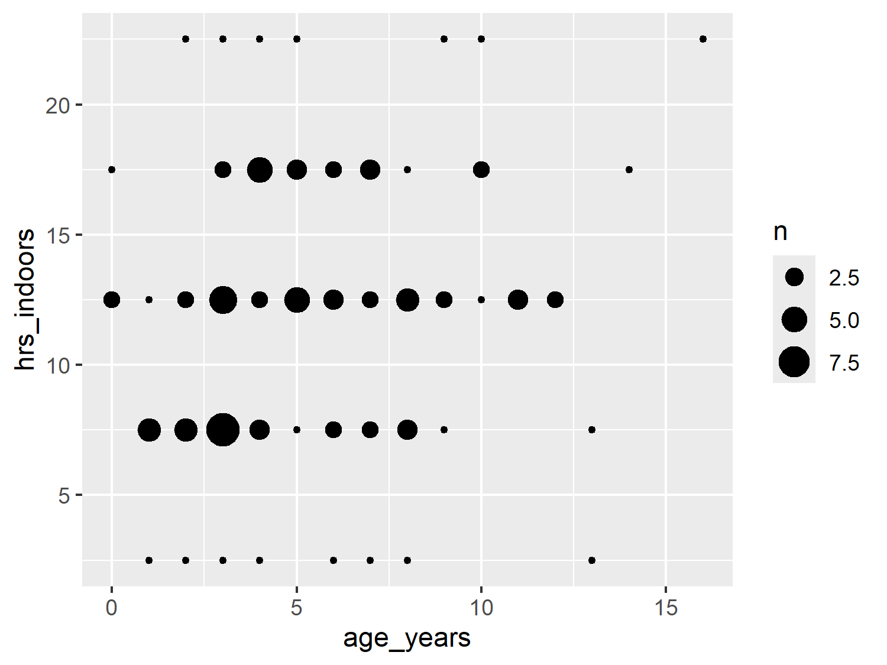
7.4 Advanced styling
We’re now ready to start styling our plot, to take it from a generic, default bubble plot to something that doesn’t even look like it was made with R!
7.4.1 Colors
Since we aren’t mapping any columns in the data to color or fill, we don’t need to specify a color palette. Instead, we’ll simply choose a text color (dark gray), background color (white), and highlight color (purple).
text_col <- "#2F4F4F"
highlight_col <- "#914D76"
bg_col <- "white"We can update our initial base_plot code to change the color of the points to highlight_col inside geom_point(). Remember that since this color isn’t based on a column in the data, it doesn’t need to go inside aes().
The size legend is generated automatically, and it picks evenly spaced intervals given the range of the data. Unfortunately this sometimes results in labels that don’t quite make sense. Here, we have a label for 2.5 cats - not something that exists in the natural world! Let’s choose more appropriate breaks for the size legend. Here, our size data ranges between 1 and 9, so let’s go for 3, 6, and 9. We pass these desired break points in as a vector to scale_size(). Note that the sizes of the points in the plot are unchanged, only the legend is updated.
base_plot <- ggplot(
data = plot_data,
mapping = aes(
x = age_years,
y = hrs_indoors,
size = n
)
) +
geom_point(color = highlight_col) +
scale_size(breaks = c(3, 6, 9))
base_plot
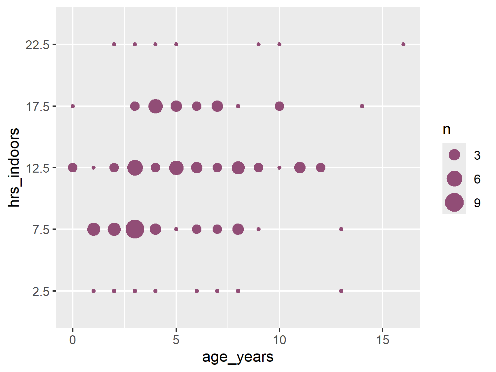
7.4.2 Text and fonts
Here, we’ll use a fun font for the title, but keep it clean and minimal for the body font. For the body_font, we’ll use Ubuntu as we did in Chapter 5. For the title_font, we’ll use Chewy, an almost cartoonish font that vaguely resembles handwriting. Both are Google Fonts and so we load them using font_add_google() as we’ve done in previous chapters, and set up the relevant {showtext} options.
sysfonts::font_add_google(name = "Chewy")
sysfonts::font_add_google(name = "Ubuntu")
showtext::showtext_auto()
showtext::showtext_opts(dpi = 300)
title_font <- "Chewy"
body_font <- "Ubuntu"7.4.3 Adding annotations
Charts are considered visual elements. And the quote a picture is worth a thousand words is often floated around as motivation for why you should visualize your data instead of describing it. But just because you’re making a picture doesn’t mean you can’t also use words. It’s not necessarily a weakness of a chart, if adding some textual indicators improves its clarity.
In Chapter 2, when we constructed the subtitle, we used glue() to create data-driven text. This meant that, if the underlying data was updated, the subtitle would also be updated correctly. It’s a more efficient approach that’s less prone to accidental errors than hard coding all of the text. We can take a similar approach when adding annotations to plots.
Let’s say we want to add an annotation to the plot that highlights the oldest cat in the data. We’ll start by obtaining the data that relates to the oldest cat. We can use slice_max() from {dplyr} to obtain the row of the data where the age_years is highest:
annot_oldest <- cats_reference |>
dplyr::slice_max(age_years)When it comes to adding the annotation to the plot, there are several choices we can make within {ggplot2}:
-
textorlabel: usingtextsimply adds the text whilelabeladds text within a rectangular box. -
annotate()orgeom_*():annotate()places objects (in this case text) at fixed, specified locations whereasgeom_*()functions add objects based on some input data.
Any combination of these choices could likely work for the annotations we plan to add. However, we’re going to use {ggtext} (C. O. Wilke and Wiernik 2022) instead of just {ggplot2}. The {ggtext} package will allow us to perform further customization of the labels more easily. We’ve already seen examples of using {ggtext} for automatically wrapping long strings, but we’re going to showcase some of its other features here - such as coloring and highlighting specific elements of text. We’ve previously described coloring sections of text in Chapter 6 using the {marquee} package, but we’ll look at {ggtext} as a comparison.
From {ggtext}, we can use the geom_textbox() function to add an annotation. Like the element_textbox_simple() we’ve been using from {ggtext} for the subtitle in previous chapters, geom_textbox() will automatically wrap the text to some pre-specified textbox size. The label aesthetic uses glue() to the cat’s name and age into the text. We can wrap sections of text inside some <span> tags. This lets us specify how we want to style the font within the tags using CSS. We also use glue() to insert the highlight_col into the style for the font used for the cat’s name. You may notice some similarity with the colored text code in Chapter 6 that uses {marquee} instead of {ggtext}. Additional arguments of geom_textbox() allow you to control the color of the text, box outline, and background color as well as the size and alignment of the text.
annotated_plot <- base_plot +
ggtext::geom_textbox(
data = annot_oldest,
mapping = aes(
x = age_years - 2.5,
y = factor(hrs_indoors),
label = glue::glue(
"The oldest cat is <span style='color:{highlight_col}'>{animal_id}</span> who is {age_years} years old."
)
),
halign = 0.5,
hjust = 0.5,
size = 2.5,
lineheight = 0.5,
family = body_font,
box.color = text_col,
color = text_col,
alpha = 0.5,
maxheight = unit(4, "lines"),
minwidth = unit(2, "lines"),
maxwidth = unit(4, "lines")
)
annotated_plot
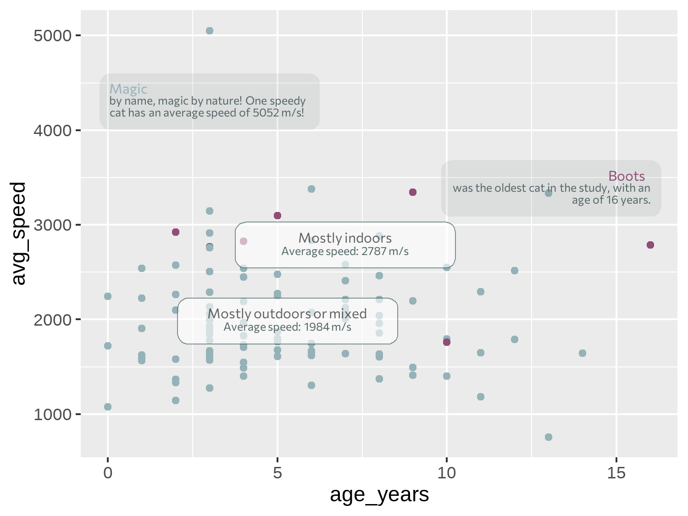
Although we’ve used HTML code within the geom_textbox() function, you can also use HTML code in the title, subtitle, or caption text - although much like with {marquee} in Chapter 6, you also need to edit the relevant theme() arguments to specify you are using {ggtext}.
Tip 7.2: Non-overlapping labels
Here, we’re only positioning one annotation and so it’s reasonably easy to manually adjust the position to make sure it doesn’t exceed the plot area or cover up any data points. If you have many textual annotations, it will quickly become difficult to manually adjust them to avoid overlapping. The {ggrepel} package (Slowikowski 2024) may help. It’s specifically designed to creating non-overlapping text and label annotations in {ggplot2}, and repositions the text for you.
To add clarity about which aspect of the plot the annotation refers to, we can add an arrow that points from the textbox to the relevant data point. Since we’re only adding one arrow, we’ll use the annotate() function. When using annotate(), we need to specify what type of geom we want to use. Though we’re trying to add an arrow, this isn’t actually a geom. We need to add a line, and then decorate the end of the line with an arrow. If you want to add a straight line arrow, you can set geom = "segment", but curved arrows often look less severe so we use geom = "curve".
We use need to tell annotate() where to put the arrow. Don’t be fooled by thinking that these co-ordinate choices were perfect first time! It takes at least a little bit of trial and error to get the arrow positioned where we want it. We can use the x-axis in Figure 7.8 as a guide for choosing what the x and xend values should be. The choice of y and yend values might look a little odd - why are we placing an arrow at around 5, when the y-axis suggests we want to place the arrow around 22? Remember that hrs_indoors is actually a factor column, not a numeric column.
Though you might expect {ggplot2} to complain when we try to place in arrow using numeric values on a discrete scale, surprisingly, it doesn’t. Since factors are essentially just ordered categories, R assigns the first level in the factor to 1, the second level to 2, and so on. This means you can convert factors to numeric variables - though be warned that the results might not always be what you expect! For our chart, we want to position the end of the arrow just below the 22.5 value which is the fifth category, so the y and yend values are slightly below 5.
We add some further styling to the line by specifying the width, the color, and how curved the line is. To add the arrow on the end of the line, we use the arrow() function. This function allows us to define the length of the arrow - note this is the length of the arrowhead, rather than the entire arrow. We also specify that the type is "closed", meaning that the arrowhead is a filled triangle. The default is "open" which, at smaller arrow sizes, sometimes looks less clear.
arrow_plot <- annotated_plot +
annotate(
geom = "curve",
x = 15.1,
xend = 16,
y = 4.6,
yend = 4.9,
linewidth = 0.3,
color = text_col,
curvature = 0.5,
arrow = arrow(
length = unit(1.5, "mm"), type = "closed"
)
)
arrow_plot
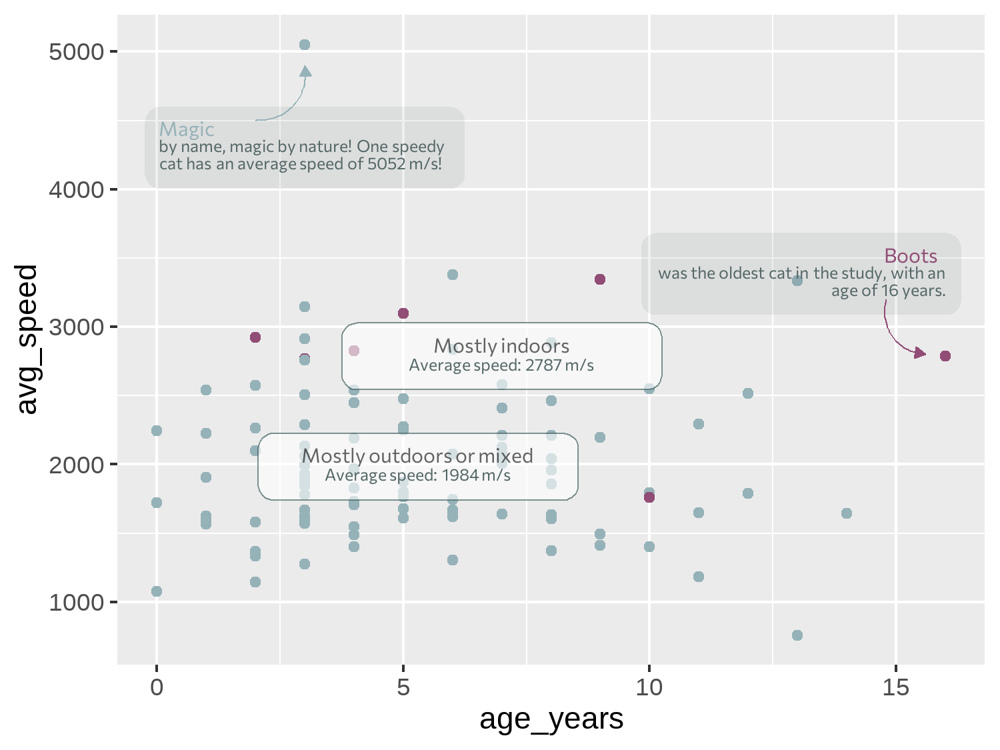
Tip 7.3: Highlighting observations in data
In Chapter 3, we used {gghighlight} (Yutani 2023) to highlight individual lines in facet plots. You can also use {gghighlight} to highlight and label individual data points in a more automated way. This may be an easier approach if you want to highlight multiple points based on some conditions, at the expense of more custom, aesthetically pleasing annotations.
7.4.4 Adding text
Let’s start to add some other, more standard text, to the chart and define some variables to store the title and subtitle text. For the subtitle, we again take a data-driven approach by using glue() as we did in Chapter 2 to paste in pre-calculated values from the data to the text.
# title text
title <- "Do older cats spend more time indoors?"
# subtitle text
perc_indoor <- round(100 * sum(cats_reference$hrs_indoors == "22.5") / nrow(cats_reference))
st <- glue::glue("Around {perc_indoor}% of cats in the study spend on average 22.5 hours per day indoors! There is a slight trend for cats to spend more time indoors as they age.")7.4.5 Custom caption functions
When we constructed the source_caption() function in Chapter 6, we simply passed in a character string to indicate the name of the creator of the chart (e.g. "N. Rennie"). What might be more useful is a way to contact or better identify the author of the chart. This could allow readers to dig into the data or code if they choose to, and allow chart creators to more easily link to other examples of their work. It’s very common in websites, for example, to link to social media profiles. We can actually do something very similar for a static chart (Rennie 2023a).
Instead of simply passing in a character string with a name, we’ll create a caption that contains social media icons and the associated handles. Since this is something we are likely to add to multiple different plots (and perhaps with different social media details), we’ll create a function that produces this caption based on some user inputs.
But first, before we jump into writing functions, we need to get some social media icons! As we did in Chapter 6, we’ll again use Font Awesome icons (Font Awesome 2024), but this time we’ll use the Brand pack of icons instead of the Solid icons. The process of loading the icons here is essentially the same as loading the Font Awesome icons in Chapter 6. After you’ve downloaded zip file of freely available icons from fontawesome.com/download, selecting the Free for Desktop option, you should see a file called Font-Awesome-6-Brands-Regular-400.otf. Again, save this .otf file somewhere you can find it again - such as in a project folder called fonts.
As before, we’ll use font_add() from {sysfonts} (Qiu 2022) to load the font into R. The family argument is how we’ll refer to the font in R, and the regular argument is the file path to the .otf file. We then use showtext_auto() and showtext_opts() to use {showtext} to render the text and set the desired resolution.
sysfonts::font_add(
family = "Font Awesome 6 Brands",
regular = "fonts/Font-Awesome-6-Brands-Regular-400.otf",
)Let’s go back to adding social media icons and create a function, social_caption() that will write the caption for us. We start by thinking about what options should be user specified:
- A choice of which social media icons and handles are included. We want users to be able to update the handle that goes with a particular social media icon e.g. for switching between work and personal accounts.
- We should also give a user the option to switch off a specific social media icon if they want to.
- The colors of the icons and the fonts. We might choose to force these to be the same, or allow them to be different.
- The font family of the non-icon text i.e. the social media handles. We want a user to be able to pass in their choice of font to match with the text in the rest of their chart.
To construct this example social_caption() function, we’ll include icons for LinkedIn, GitHub, and BlueSky. You might choose to include others. We’ll have one argument in the function for each of these social media sites, with the default value specified as the handle that will be used most often. We also add two arguments to control the icon and font colors: icon_color and font_color. Both are set to "black" by default, which is consistent with other {ggplot2} text.
Within the function, we start by putting together a data.frame that maps the values a user has input for the social media handles to the correct icon. We’re going to be using {ggtext} (C. O. Wilke and Wiernik 2022) to process the caption, meaning we can write HTML code to join together icons, text, and text formatting. We also need to know which Unicode characters map to each social media icons so that we can pass them into some HTML code.
Take the GitHub icon as an example. You can search for the icon you want at fontawesome.com/icons, and you’ll see the Unicode icon in the top right of the screen (although a Google search or ChatGPT would likely work equally well!) The Unicode for the GitHub icon is f09b, and to use this in HTML code we can write it as  (Rennie 2023a). We repeat this for the other icons we want to use.
We then use na.omit() to remove any rows of our data.frame that contain NA values. Since we’ve set default arguments for each social media handle, there won’t be any default values in our data.frame be default either. However, if a user wants to exclude a particular icon and handle from the caption, the can do so by setting that argument in the function to NA.
Rather than trying to immediately write a function that joins together many icons and handles, we’ll start by writing a function that joins one icon and one social media handle. The inner function, glue_icon(), creates a styled HTML snippet using the glue() to join together the icon Unicode and the text within the snippet. The HTML snippet contains two spans: one for the icon (styled with the "Font Awesome 6 Brands" font and our chosen icon_color) and another for the social media text (styled with our chosen font_family and font_color). We also add a space between the icon and the handle with , and a larger space at the end to separate multiple icons using  . These are special strings for adding spaces to HTML. Note that because we have quotation marks inside quotation marks inside quotation marks, we need to escape the inner ones using \".
Finally, we use map2() from {purrr} (Wickham and Henry 2023) to apply glue_icon() to each row of our icon_df data. We then collapse the resulting list into a vector using as_vector() from {purrr}. We then further collapse the vector into a single character string with str_flatten() from {stringr}. This flattened string is our social media caption.
social_caption <- function(linkedin = "nicola-rennie",
bluesky = "nrennie",
github = "nrennie",
icon_color = "black",
font_color = "black",
font_family = "sans") {
icon_df <- data.frame(
icons = c("", "", ""),
socials = c(linkedin, bluesky, github)
)
icon_df <- na.omit(icon_df)
# Inner function to join icon and text
glue_icon <- function(icon, social) {
glue::glue(
"<span style='font-family:\"Font Awesome 6 Brands\"; color:{icon_color};'>{icon} </span> <span style='font-family:{font_family}; color:{font_color};'>{social} </span> "
)
}
# Map over all icons
caption <- purrr::map2(
.x = icon_df$icons,
.y = icon_df$socials,
.f = ~glue_icon(.x, .y)
) |>
purrr::as_vector() |>
stringr::str_flatten()
return(caption)
}We can then use the social_caption() function, passing in the color and font variables we’ve previously defined to their relevant arguments:
social <- social_caption(
icon_color = highlight_col,
font_color = text_col,
font_family = body_font
)
social[1] "<span style='font-family:\"Font Awesome 6 Brands\"; color:#914D76;'> </span> <span style='font-family:Ubuntu; color:#2F4F4F;'>nicola-rennie </span> <span style='font-family:\"Font Awesome 6 Brands\"; color:#914D76;'> </span> <span style='font-family:Ubuntu; color:#2F4F4F;'>nrennie </span> <span style='font-family:\"Font Awesome 6 Brands\"; color:#914D76;'> </span> <span style='font-family:Ubuntu; color:#2F4F4F;'>nrennie </span> "You can see that the output of the social_caption() is a pretty incomprehensible string that would’ve been quite tricky to type out manually - aren’t we glad we built a function to do it for us! We can then use our source_caption() function from Chapter 6, and pass the output from the social_caption() function into the graphic argument. We also place them on separate lines by using <br>.
cap <- source_caption(
source = "McDonald JL, Cole H. 2020. doi.org/10.5441/001/1.pf315732.",
sep = "<br>",
graphic = social
)The text can then be added to Figure 7.9 using the labs() function as normal, by passing in the variables to the title, subtitle, and caption arguments. We also add more informative text for the title on the x and y axes, making sure to also specify the units.
By default, the legend title is simply the name of the column mapped to the aesthetic in the legend. Here, the column mapped to size is n and so that’s the name of the legend, which isn’t very informative. There are several different ways to edit the name of the legend. We could have specified the name argument when we used scale_size() earlier. An alternative, is to use the labs() function. The title for any aesthetic can be specified in labs(), not just x and y. We simply pass the desired legend title into size.
text_plot <- arrow_plot +
labs(
title = title,
subtitle = st,
caption = cap,
x = "Age of cat (years)",
y = "Average time spent indoors (hours per day)",
size = "Number of cats"
)
text_plot
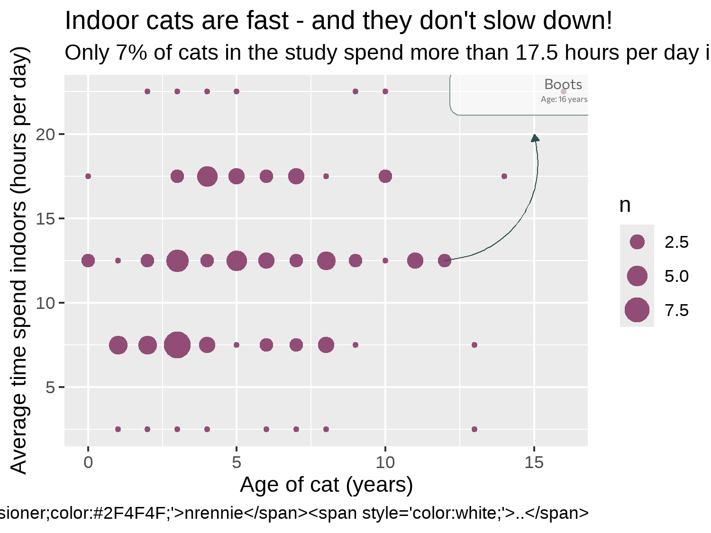
7.4.6 Adjusting themes
You’ll notice that in Figure 7.10, the social media caption that we worked so hard to create isn’t properly formatted and it simply appears as the raw HTML code we wrote. The reason it doesn’t look quite as we’d hoped is because {ggplot2} doesn’t natively understand how to parse the HTML code. That’s where {ggtext} comes in. {ggtext} is designed to improve text rendering in {ggplot2}, including providing support for using Markdown and HTML inside text elements. We haven’t actually used {ggtext} for our caption yet! Much like with {marquee} in Chapter 6, we need to edit the plot.caption argument of theme() to tell it to use {ggtext} to process the HTML code. We can use element_textbox_simple() to do this (as we’ve been doing to wrap the subtitle text anyway). It had similar arguments to element_text() in {ggplot2} but we don’t actually need to specify any additional arguments here. You could also use element_textbox() which works very similarly but has slightly different default values or element_markdown(), if you’d prefer (Rennie 2023a).
We make some further edits using the theme() function after applying theme_minimal() as a base theme, as we’ve done in previous chapters to align the plot and caption text to the plot rather than the panel, change the color of the text, and edit the background color. We also make some adjustments to the legend. It’s currently taking up quite a lot of space on the right hand side, but there is plenty of available space within the plot area itself. We use legend.position = "inside" to move the legend inside the panel area and specify the coordinates of where we want to position it using legend.position.inside. For positioning the legend, c(0, 0) is the bottom left corner and c(1, 1) is the top right corner. To make sure that it’s easy to distinguish between the legend and the data points, we draw a dark outline around it.
text_plot +
theme_minimal(
base_family = body_font,
base_size = 6.5
) +
theme(
# legend styling
legend.position = "inside",
legend.position.inside = c(0.9, 0.25),
legend.background = element_rect(
fill = alpha(bg_col, 0.6),
color = text_col
),
# text
text = element_text(color = text_col),
plot.title = element_text(
family = title_font,
face = "bold",
size = rel(1.5)
),
plot.subtitle = ggtext::element_textbox_simple(),
plot.caption = ggtext::element_textbox_simple(),
plot.title.position = "plot",
plot.caption.position = "plot",
# background and grid
plot.margin = margin(5, 5, 5, 5),
panel.grid.minor = element_blank(),
plot.background = element_rect(
fill = bg_col,
color = bg_col
),
panel.background = element_rect(
fill = bg_col,
color = bg_col
)
)
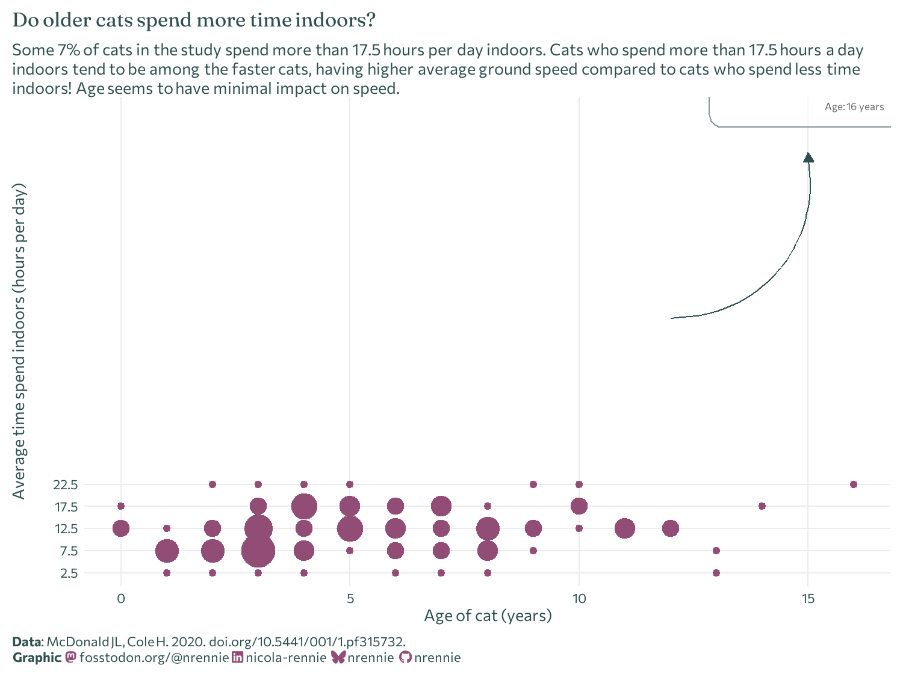
We can then finally save the chart in PNG format using ggsave():
ggsave(
filename = "cats.png",
width = 5,
height = 0.75 * 5
)7.5 Reflection
This is a very clean looking chart and, though annotations have been added, it doesn’t look too busy or complex. We could (carefully) add further annotations to perhaps highlight the youngest cats or the cats who spent the least amount of time indoors.
The legend box and the annotation box currently look quite different. The legend box has square corners, compared to rounded corners, and the outline color is darker. For consistency, it would look better if both boxes appear with the same styling.
In this chart, we’ve considered only two variables, but there are many others available that we could have explored further. It would be particularly beneficial to join together the GPS data with the cat characteristics data. In Figure 7.11, we communicate only the (weak) relationship between cat age and how many hours cats spend indoors. Both are reported by the cat owners. But the number of hours a cat spends indoors doesn’t necessarily tell us very much about the cat’s activity levels. Are they sleeping all day when they’re at home? When they’re not indoors, are they running around or simply soaking up the sun? If we had joined the GPS data, we could have perhaps made a more informative plot showing the relationship between age and activity level.
Each plot created during the process of developing the original version of this visualization was captured using {camcorder}, and is shown in the gif below. If you’d like to learn more about how {camcorder} can be used in the data visualization process, see Section 14.1.
The original version look at the relationship between age and ground speed (despite) the issues with the reliability of the data.
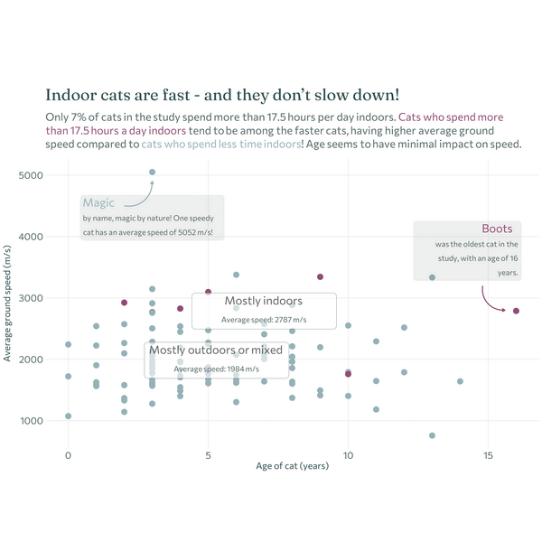
{kind=link}
{kind=link}
{kind=link}
{kind=link}
{kind=link}
{kind=link}
{kind=link}
{kind=link}